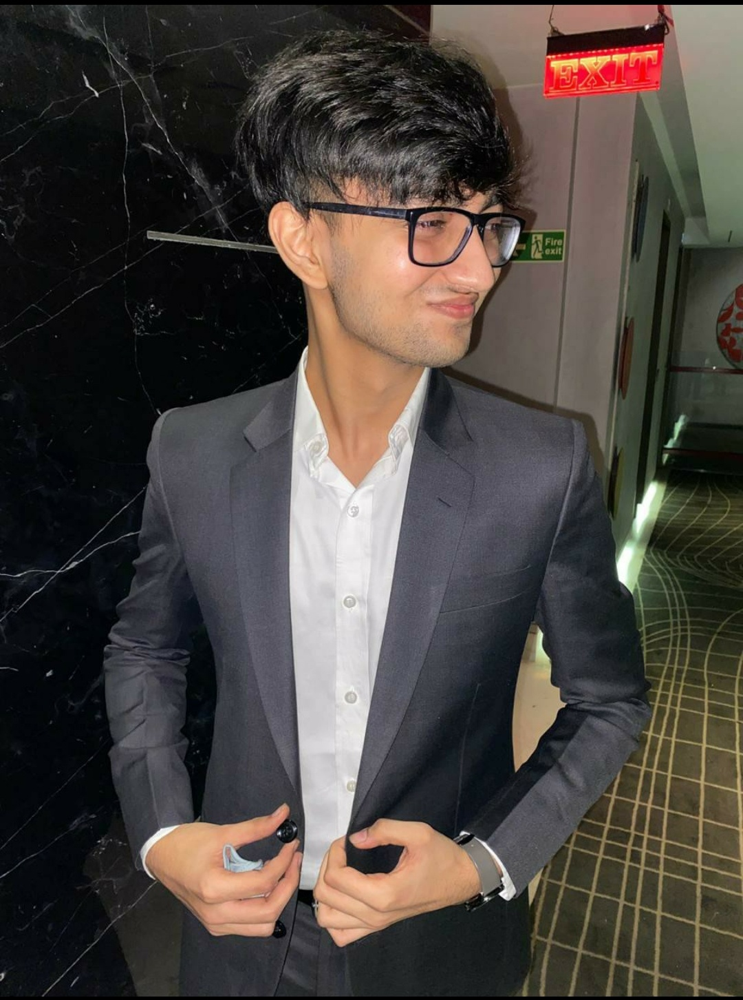

Hello there! My name is
Aditya Chopra.
Just a guy trying to make some hot leaf juice!
I'm a Computer Science Undergrad from India in my 3rd year. I dabble mostly with Frontend and Backend Web Development. Occasionally, you may find me exploring Deep Learning and Robotics.
Currently looking for internships in the fields of Software Engineering and Data Science. If I happen to have started blogging, you can find it here
01.
About Me
Hello There! I am a Computer Science Engineering Student in my 3rd Year of Undegrad Education at BITS Pilani, Hyderabad Campus. What started as a hobbie in 2014, has grown into my choice of career and pashion for the years to come. I work with Frontend and Backend of web technologies, and am currently learning more about GraphQL and Designing Scalable Systems.
I am also keenly interested in the field of Deep Learning, all things about it from the Mathematical background to the Application pipelines. I have worked with Computer Vision and Language Models and currently exploring the rich field of Deep Reinforcement Learning.
Here are the technologies I have worked with recently:
- ReactJS | NextJS
- Express | Django
- REST | GraphQL
- PyTorch | Keras
- Stable Baselines

02.
Experience
03.
Projects

B(CMS), or the Better CMS was created as a minimal replacement for the Moodle Application used by our university.
ReactExpressTailwindTypeScriptPostgres

REST API for a Mobile App. for tracking todo lists, schedules and inventory of the user.
DjangoPostgresRedisAzure CloudHeroku

Web Application to track and manage Google-Meet Links for courses conducted during online semesters.
ExpressMongoDBReactHeroku